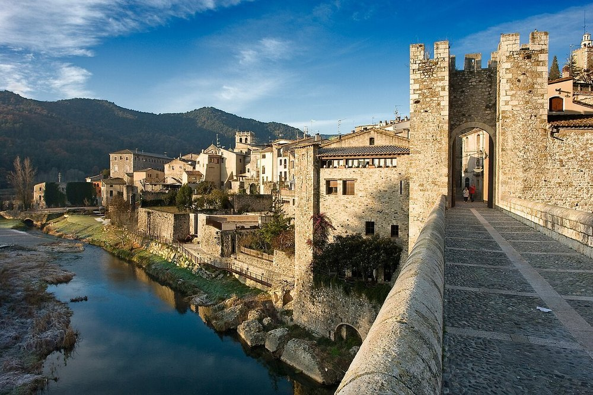
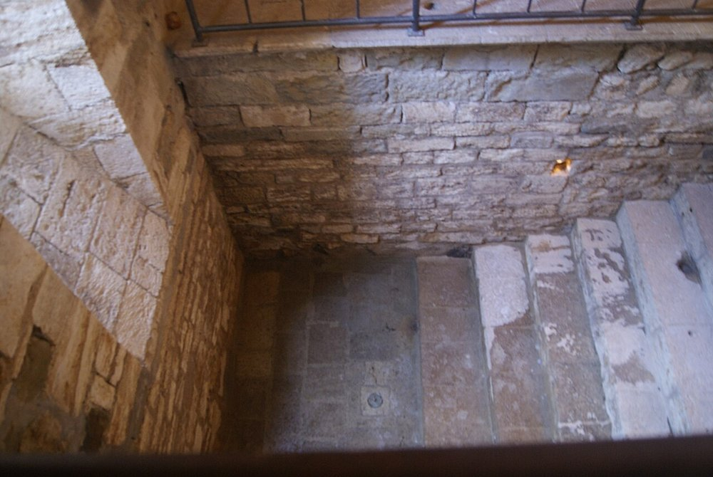
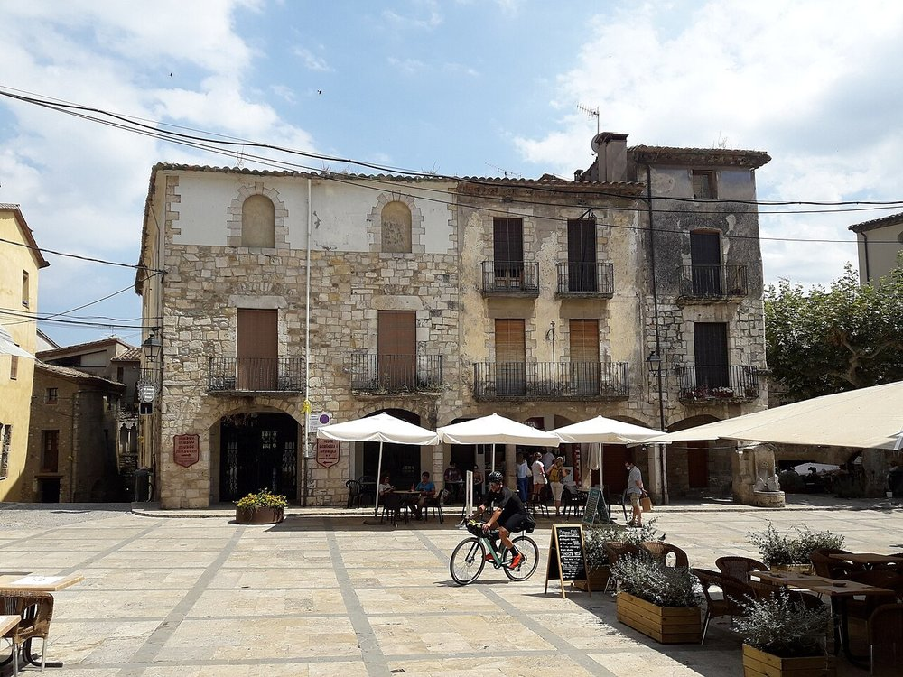
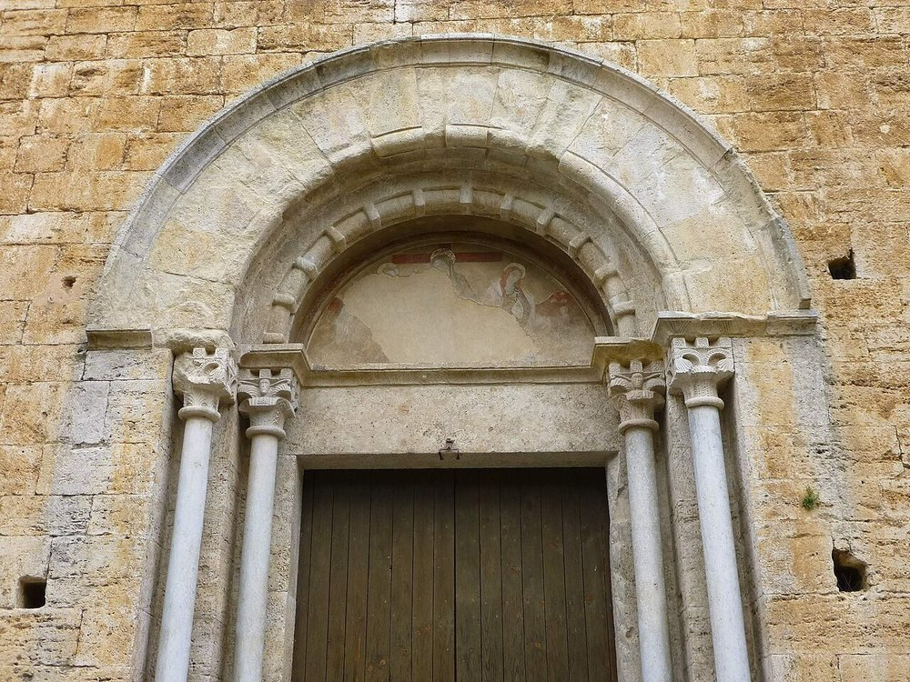
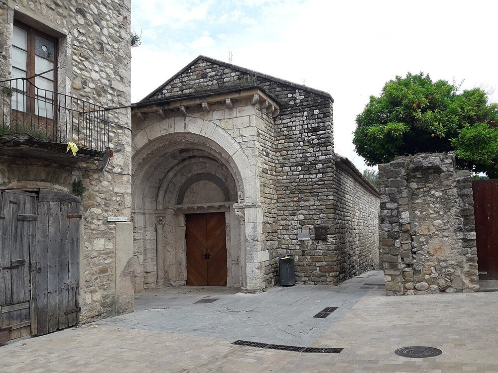

Lo que no hay que perderse
En el orden de un paseo tranquilo. Es una recomendación, podemos cambiarlo cuando queramos.
El Pont Vellsiglos XI y XIVLa imagen de Besalú
El documento más antiguo que lo cita es de 1075, probablemente el año de su construcción. Se reconstruyó en el siglo XIV tras las riadas y por necesidades defensivas. Resistió hasta la Guerra Civil, y el puente actual es una reconstrucción de principios de los años sesenta.
Destaca por sus dimensiones y por un ángulo recto sobre el río Fluvià. Una guía le da unos 135 metros, siete arcos desiguales y una torre hexagonal de 30 metros que fue aduana medieval. Cruzarlo de la mano es gratis y no tiene horario.

El barrio judío y el mikvésiglo XII
En el siglo XII una nueva muralla encerró el barrio judío, la iglesia de Sant Vicenç y el barrio de Vilarrobau. El mikvé, el baño ritual, está junto al río, dentro del antiguo call. Probablemente es románico.
Es uno de los pocos baños rituales judíos que se conservan y tiene una de las mejores vistas del Fluvià. Solo se visita con guía desde la oficina de turismo, con el horario que hemos comentado arriba.

El monasterio de Sant Peresiglo X
Un monasterio benedictino documentado en el siglo X. Quedó fuera de la muralla del siglo XII y no entró en el recinto fortificado hasta el siglo XIV. Es uno de los edificios medievales más importantes de la villa.
La fachada y la plaza se ven libremente. El interior solo se visita con guía. No hemos encontrado el horario del domingo.

La plaza de la Llibertat y la Cúria Reialsiglos XVI y XVII
Una plaza con soportales, urbanizada entre los siglos XVI y XVII. También se la llama Plaça Major. Allí está el ayuntamiento del siglo XVII.
El edificio gótico de la plaza se atribuye a la Cúria Reial, el antiguo tribunal real. La plaza es de paso libre. Es el sitio ideal para sentarnos un momento a ver pasar el día.

La iglesia de Sant Vicençsiglo X
La parroquia está documentada en el siglo X y quedó dentro de la muralla del siglo XII. Una guía la describe como uno de los edificios más antiguos de la villa y una joya del románico catalán.
Su interior forma parte de la visita guiada completa de la oficina de turismo. No hemos encontrado el horario del domingo.

El hospital de Sant Juliàsiglo XIIPara los dos
Fue un hospital de peregrinos, fundado para pobres y caminantes. Conserva la iglesia de Sant Julià, con una fachada románica. Se conserva sobre todo la fachada, con un portal de arcos.
Se visita solo por fuera, así que es un buen rincón para una última foto antes de ir a comer.
